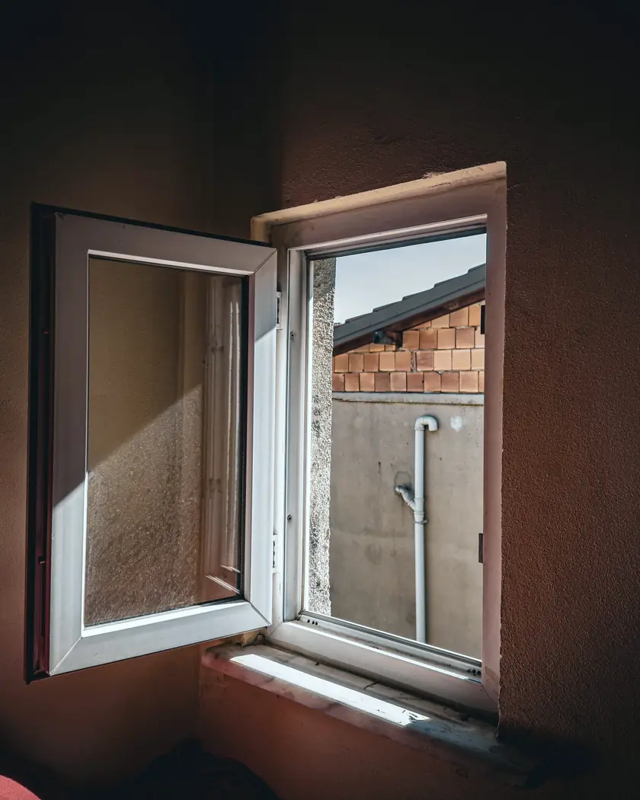
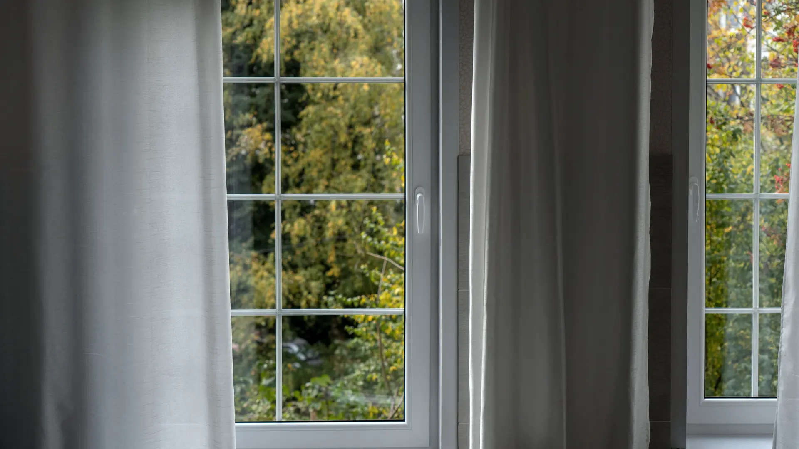
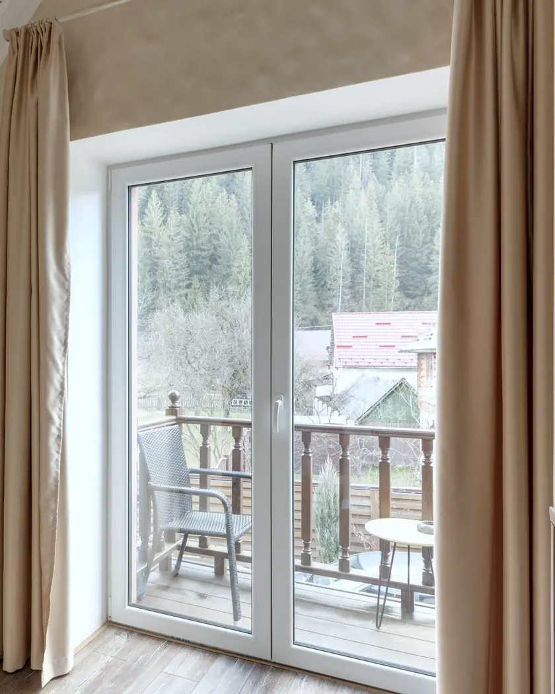
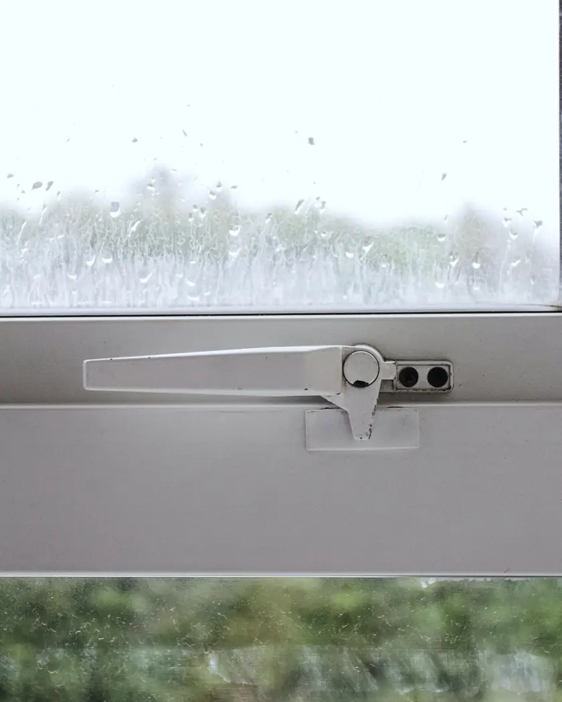
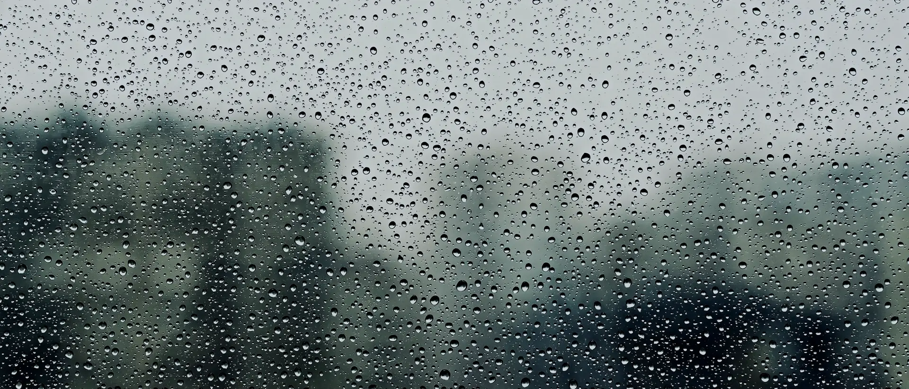
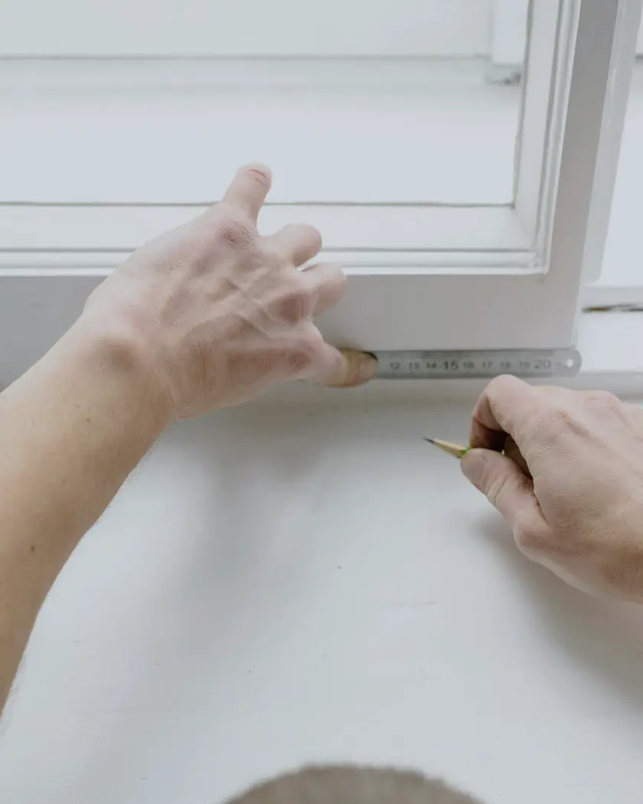
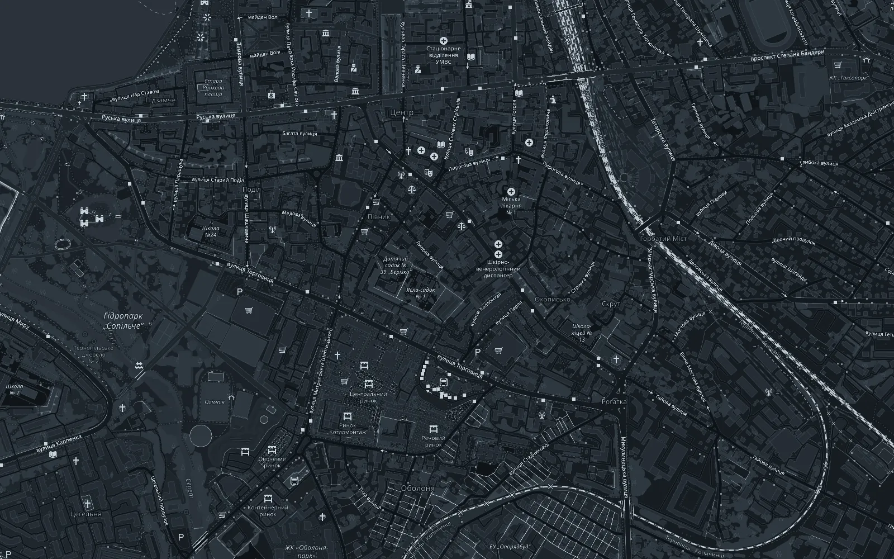

01
Металопластикові вікна
Розкажіть, скільки вікон потрібно й де вони стоятимуть, і ми підкажемо варіант.

Салон PERFECT · Тернопіль
Салон металопластикових вікон і дверей на Шептицького, 15, поруч з Ельмартом. Заходьте або зателефонуйте: підкажемо, з чого почати.
Вікна й двері
Салон Perfect працює з металопластиковими вікнами й дверима. Підкажемо телефоном або в салоні, з чого почати.

Розкажіть, скільки вікон потрібно й де вони стоятимуть, і ми підкажемо варіант.

Розкажіть, для якого прорізу потрібні двері, і ми підкажемо, з чого обрати.

Приходьте на Шептицького, 15, поруч з Ельмартом: відповімо на запитання про вікна й двері.

За склом може йти дощ.
Вдома має бути тихо й тепло.

Як замовити
Телефон +380 97 144 8056 або салон на вулиці Шептицького, 15, поруч з Ельмартом.
Скільки вікон чи дверей, приблизні розміри, квартира чи будинок. Фото прорізів теж допоможуть.
Обираєте варіант, домовляємося про ціну й терміни.

Салон
вул. Митрополита Шептицького, 15, Тернопіль, 46008. Поруч з Ельмартом.
| Понеділок-п’ятниця | 09:00-18:00 |
|---|---|
| Субота, неділя | 09:00-15:00 |
4,2 з 5 у Google Maps, 30 відгуків
Контакти
Напишіть, які вікна чи двері вам потрібні, і залиште телефон. Або просто зателефонуйте.
+380 97 144 8056